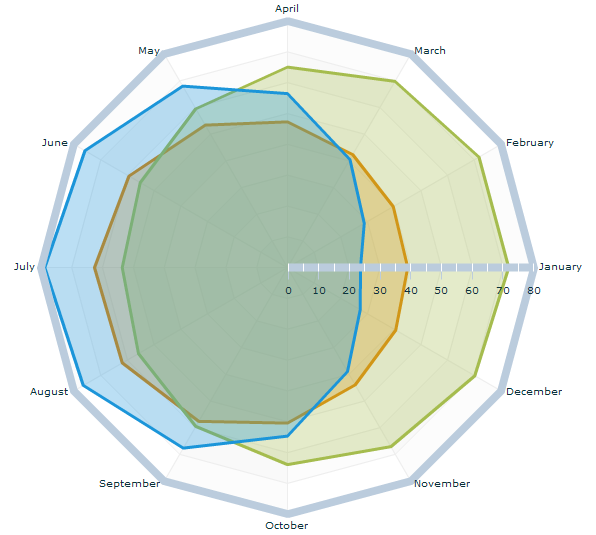

The
RadarLineSeries class
represents data as a series of points connected by a continuous line
that draws a polygon around the center of the chart. You can use an
icon or symbol to represent each data point or show a simple line
without icons. You can choose to fill the polygon by using the
areaFill style property.
The following figure shows an example of a radar chart
with a line series type. The chart shows the average temperatures
for London, Sydney, and Beijing on the radial axis, and the months
of the year on the angular axis.

The following code displays the radar line series chart
shown in the figure:
<?xml version="1.0" ?>
<!-- Simple example to demonstrate the RadarChart control with
RadarLineSeries.
-->
<mx:Application xmlns:mx="http://www.adobe.com/2006/mxml"
xmlns:ilog="http://www.ilog.com/2007/ilog/flex">
<mx:Script>
<![CDATA[
import mx.collections.ArrayCollection;
[Bindable]
public var temperature:ArrayCollection = new ArrayCollection([
{Month:"January", London:39, Sydney:71.8, Beijing:23.7},
{Month:"February", London:39.6, Sydney:71.8, Beijing:28.8},
{Month:"March", London:42.3, Sydney:69.8, Beijing:40.5},
{Month:"April", London:47.3, Sydney:65.1, Beijing:56.5},
{Month:"May", London:53.4, Sydney:59.5, Beijing:68},
{Month:"June", London:59.4, Sydney:55.2, Beijing:75.9},
{Month:"July", London:62.6, Sydney:53.6, Beijing:78.8},
{Month:"August", London:61.9, Sydney:55.8, Beijing:76.5},
{Month:"September", London:57.6, Sydney:59.5, Beijing:67.6},
{Month:"October", London:50.5, Sydney:63.9, Beijing:54.7},
{Month:"November", London:43.9, Sydney:67.1, Beijing:39},
{Month:"December", London:40.6, Sydney:70.2, Beijing:27.3}
]);
]]>
</mx:Script>
<mx:Panel width="100%" height="100%" title="Radar Line Series Example"
layout="horizontal">
<ilog:RadarChart id="radar" width="100%" height="100%"
dataProvider="{temperature}" showDataTips="true">
<ilog:angularAxis>
<ilog:AngularAxis categoryField="Month" displayName="Month" />
</ilog:angularAxis>
<ilog:radialAxis>
<mx:LinearAxis baseAtZero="true" displayName="Temperature (ÂÂ˚F)" />
</ilog:radialAxis>
<ilog:series>
<ilog:RadarLineSeries dataField="London" displayName="London" />
<ilog:RadarLineSeries dataField="Sydney" displayName="Sydney" />
<ilog:RadarLineSeries dataField="Beijing" displayName="Beijing" />
</ilog:series>
</ilog:RadarChart>
<mx:Legend dataProvider="{radar}" />
</mx:Panel>
</mx:Application>